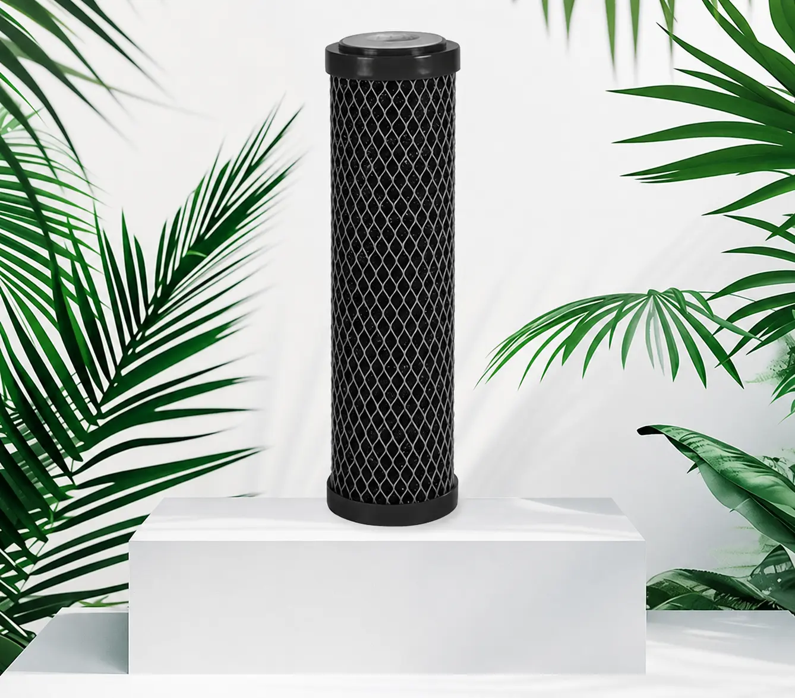
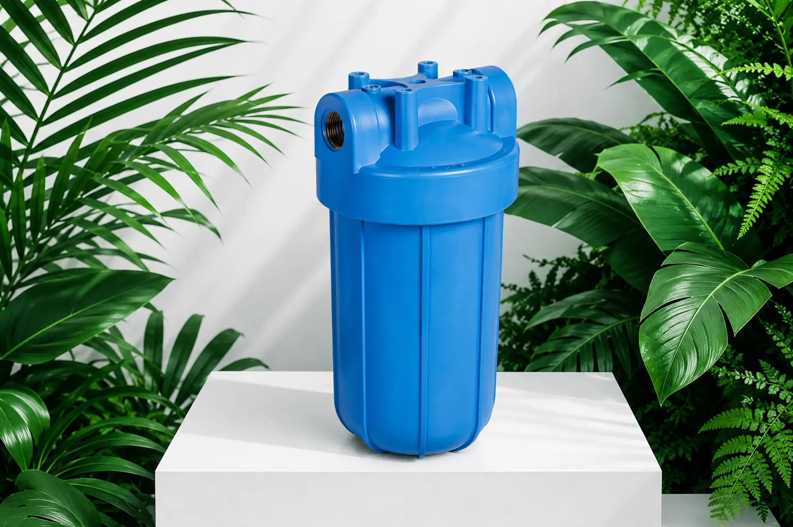
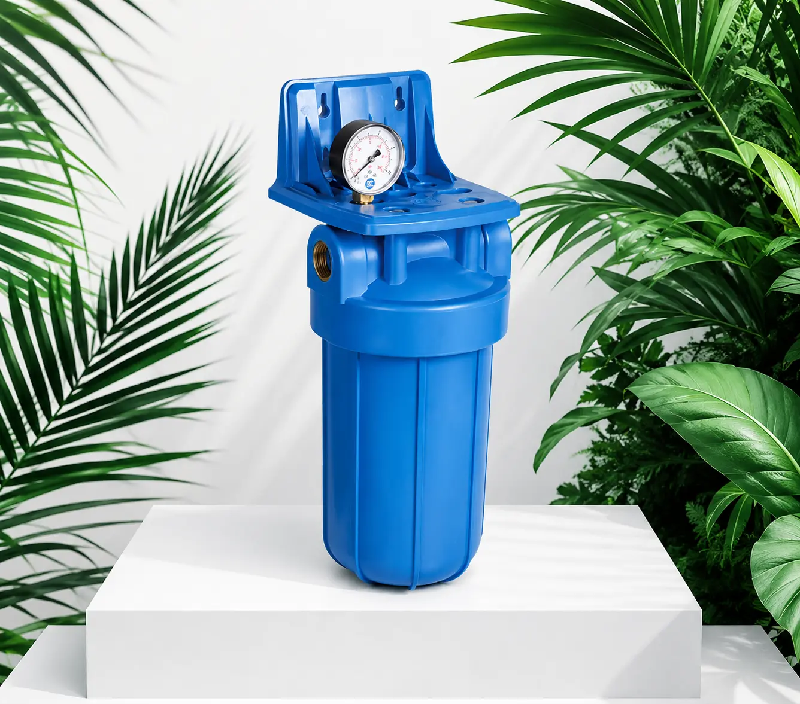

Rasayanav offers a comprehensive range of advanced water filtration products designed to meet the specific needs of homes, offices, and industrial applications. From whole-house systems to portable filters, our products combine cutting-edge technology with reliability to ensure the purest, cleanest water for your needs.
From whole-house filtration systems to compact, portable filters, Rasayanav offers a wide range of products designed to meet the specific needs of homes, offices, and businesses. Discover our complete product portfolio:
Our Reverse Osmosis (RO) filtration systems provide the purest water by removing a wide range of contaminants. Using advanced membrane technology, these systems eliminate dissolved solids, chemicals, bacteria, and other impurities, ensuring water of the highest quality for drinking and cooking.

Activated Carbon Filters efficiently eliminate odors, chlorine, and organic contaminants, significantly improving the taste and smell of water. These filters are highly effective for everyday drinking water filtration and can be used as pre-filters or standalone systems.
Our UV Water Purifiers safely eliminate harmful microorganisms without the use of chemicals. Using ultraviolet light technology, these systems effectively kill bacteria, viruses, and other pathogens, ensuring microbiologically safe water for your family or business.


High-quality replacement cartridges ensure your filtration system works at peak performance for longer. We offer a complete range of compatible cartridges for all filter types, making maintenance simple and cost-effective.
When it comes to water filtration solutions, Rasayanav delivers excellence at every level.
All our products are manufactured with top-grade materials using cutting-edge technology to ensure reliability and long-lasting performance.
Multi-stage filtration systems featuring the latest technologies including reverse osmosis, activated carbon, and UV purification.
Our sustainable solutions reduce plastic waste and promote responsible water use for a healthier environment.
Millions of satisfied customers worldwide rely on Rasayanav for clean, safe, and healthy water every day.
Invest in your health and comfort with Rasayanav's advanced water filtration systems. Contact our team to learn more or find the perfect filter for your needs.